Had you have asked me where I was going on a surf trip in January 2024 you would have heard all about my plan to go surf in Lobitos, Peru. I had already taken my sights off of the classic post-grad Indonesian excursion and had began to plan a wild South American goose chase of empty lefts in Peru. As months rolled by and my travel partner-in-crime, Nathaniel, and I procrastinated every part of the research we should have been partaking in. We were busy trying to pass our final classes and wanted to get the most out of our last moments of living in Isla Vista. June snuck up on us quick and by then we had lost the motivation for Peru. It seemed too expensive and fickle.
Every surfer in college at one point or another says, “As soon as I graduate I’m headed to Indo”; at least in my experience. Thats what Nathaniel had been saying since I met him three years ago at a UCSB Surf Team party. And thats what he said when we graduated. By mid-July we had our tickets. I think Nathaniel’s cost around $1000 after all fees paid, and mine was $1200.
In August we booked lodging for our first 17 nights. The first five nights we are staying at the Kubu Containers in Bali and the next 12 are at a homestay in Lakey Peak.
Stop 1: Bali
At 10:05PM on September 7th my plane left the ground in San Francisco and my plane touched down at 4:50AM on September 9th in Singapore. That was a long time in the air.
9/9/24 – I waited another 2 hours for Nathaniel to arrive. We decided to set out on our own to find the Gardens by th Bay in Downtown Singapore. Our first mission was to navigate Singapore’s extensive train system, which luckily had a lot of service to the Changi airport and was easy to buy a transit card at the station (cough cough take notes SF clipper cards). After a 30 minute train ride and some aimless humid wandering around the towering business district we found our way to the enormous and impressive Gardens by the Bay mall and supertrees.
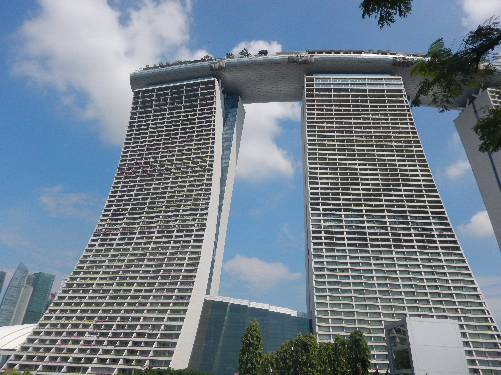 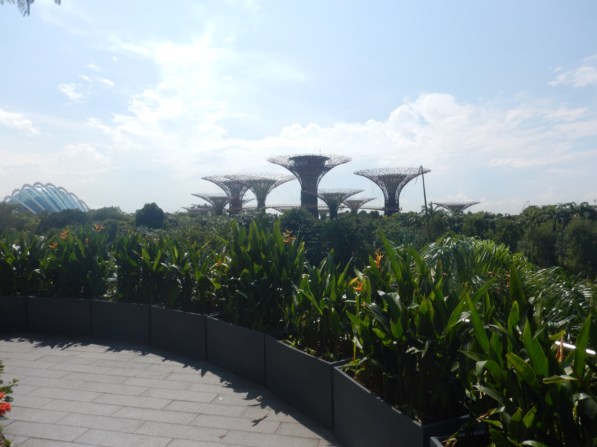
Side note: If you want food that isn't coffee or pastries before 11 AM in Singapore, you're going to have a tough time. Better to try in the airport.We took the train back to the airport and hopped on our 2 hour flight to Denpasar. Outside the airport was the usual barrage of taxi drivers bidding on your business. We found a guy who we got down to 350k. I don’t know if that was a good or bad deal fro the 1 hour ride to Uluwatu, but it was 9PM and we just wanted to get to a real bed. We arrived at our Kubu Containers, walked to the store, bought some Bintangs, hopped in bed and passed out.
{kind=link}
9/12/24 – It is now day 3 in Bali, we have surfed Uluwatu twice a day for the last two days, I have become all too friendly with the reef, and have paid and average of $3-6 per meal depending on if I get a smoothie or not. Nathaniel and I have for the most part only eaten at this place called Warung Local. The place seems sanitary, has a large variety of food items, and is $3 for a plate of Nasi Goreng (Fried Rice). As for my relationship with the reef, I have encountered it pulling into my biggest barrel and smallest barrel of the trip.
{kind=link}
The crowd at Uluwatu is thick and greedy, I am not one to steal someones waves nor bump shoulders to get one, so my strategy during the peak hours has been to sit on the beginning of a sectiony part of the wave and take off when people fall. This has been especiallly lucrative since we have been surfing Racetracks. A notoriously fast wave, as seen below.
On Saturday we head to Lakey Peak. An interesting journey ahead
Stop 2: Hu’u
After looking at the price of flights + boards + taxis we were looking at around $800 to get to Lakey Peak and back. So after reading an article about scootering to West Sumbawa (we were going to the East side), and watching a video of a couple people who did it, we decided to commit to our two day journey. We booked a place in West Lombok as a halfway point and stored our board bags at the place we were staying in Bali. On Friday we visited the Uluwatu Hindu Temple to see the famous temple on the bluff, but mostly to see the monkeys.
{kind=link}
Its a long road to Hu’u.
We woke up at 4:30AM in an effort to catch the 6:30 ferry out of Padangbai. From Uluwatu it was a 2 hour ride during sunrise through the city and along the coast with the city waking up around us as we got closer to the ferry port. The rules of the road are much different in Indonesia. It took a while to get used to driving on the opposite side of the road, especially without the constant reminder of the steering wheel being in the center of the road. Another change is that there seems to be not much conformity on what side to pass on (this gets even more interesting when the roads turn to a two lane highway). We pulled into Padangbai just after 6:30, missing the ferry, damn. Luckily, another ferry was leaving at 9:30 so we bought tickets, bought some petrol from some old men on the corner who had what seemed to be fighting roosters in wooden cages, and had some $2 smoothies while we waited.

Quick tip: Don't wait around to get on the ferry, especially the Padangbai-Lembar Ferry. It gets packed quick.We got on around 8:30 and my bike was in the very last row on the ferry. They made me take my surfboards off my bike so I looked a bit odd and awkward carrying my two boards through the crowded ferry. Once we got upstairs we quickly realized we would be spending the next 5 hours on the ground, it was packed. Luckily, we had been up since 4 and falling asleep wasn’t too much of an issue.
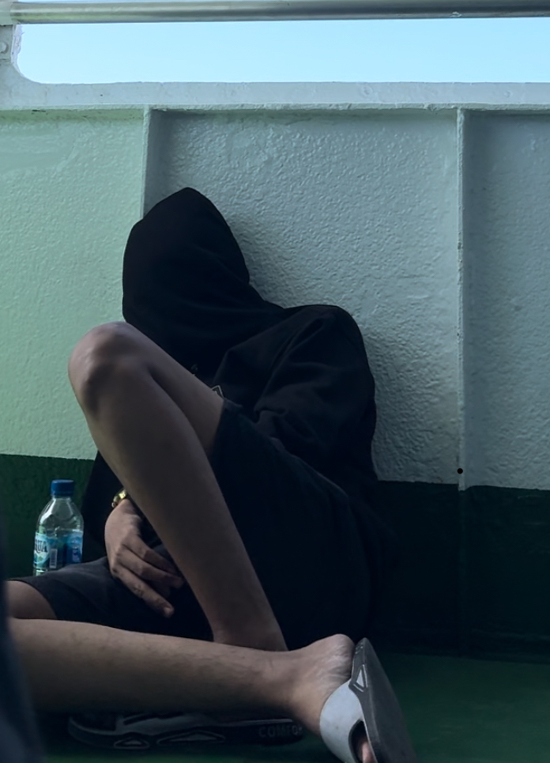 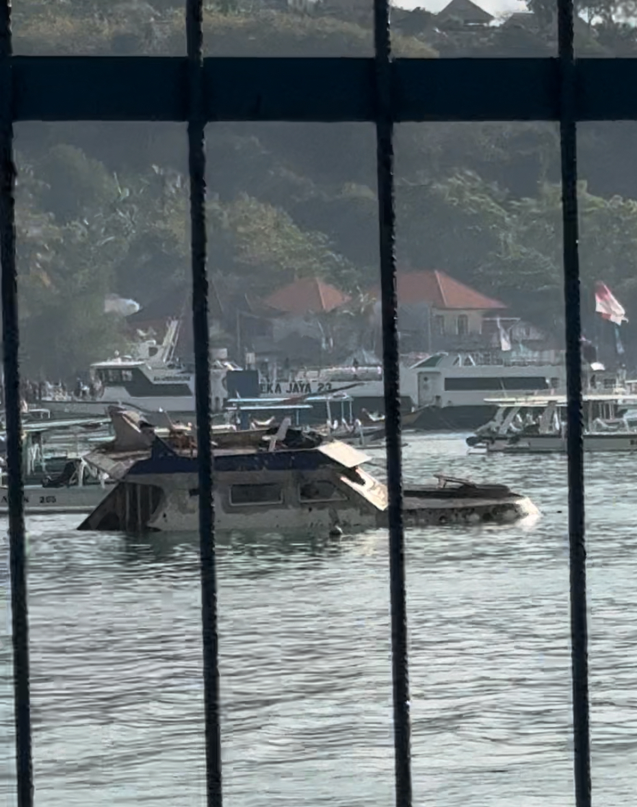  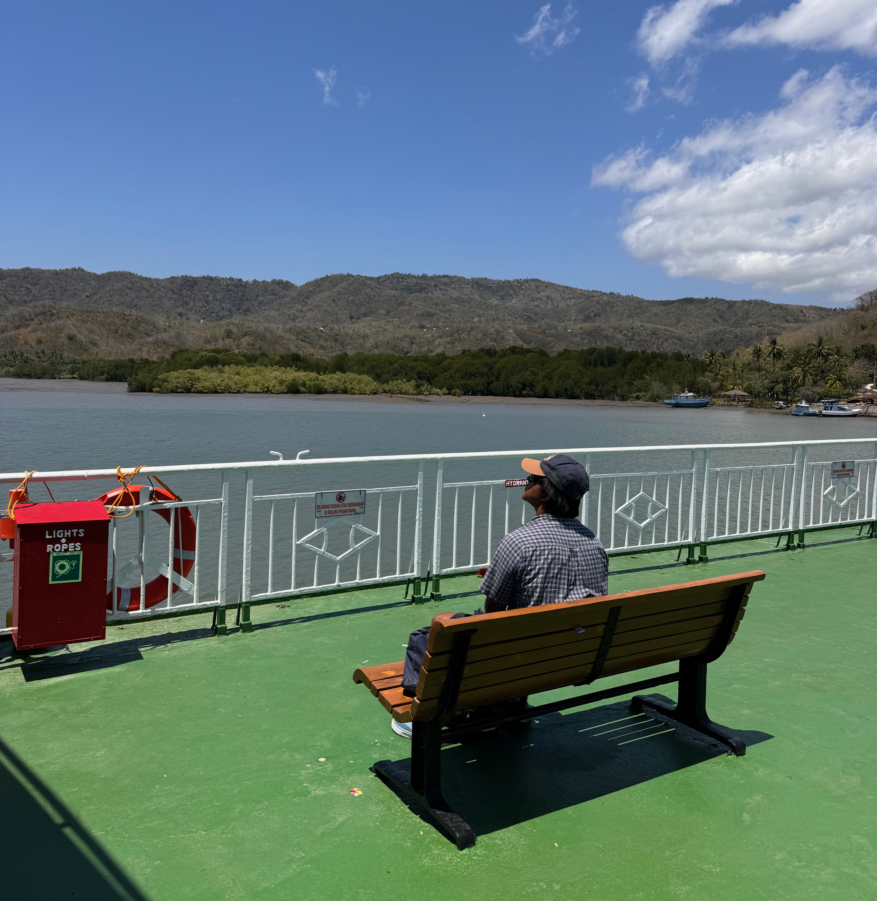
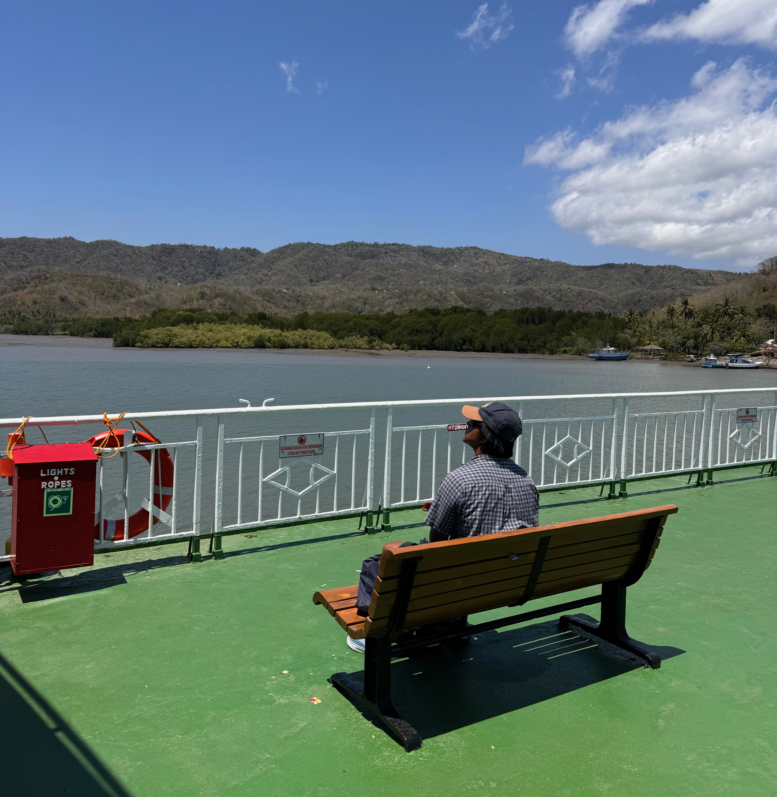
The winds blow heavy and straight in the Indonesian afternoon. For the next three hours we tacked into the heart of Lombok with our fiberglass sails pushing us where we needed to go. As you go the roads will go from nicely paved 2 lane freeways to swiss-cheese potholed roads that should be a one-way. Both are driven on by the same vehicles, and often afforded the same speed limit. There are no double yellow lines (actually there was about a quarter mile of double yellow in the whole 350 miles), and its mostly dashed passing lane with about at much “no passing zone” as you would find “passing zone” on Highway 1. As we reached the East side of the Island the air filled with the sound of Islamic Azans. From Mosque to Mosque we rode listening to the loud grainy speakers preaching to us in a foreign tongue. We reached out “East Lombok Dive Hotel” just before sunset. When we arrived the place was completely empty, but our stress was quickly quelled when our host arrived right after us. For $12.50 a night is was an awesome pot right on the sand with some much needed A/C, beds, and a shower. We picked up some food at the local Warung, found the only beer in 100 miles and rested up for our early departure.
One of the nicest roads we travelled on that day
Another early departure at 5:30 AM to the Kayangan Port about 15 minutes South of our hotel. We bought tickets from a roadside stall and after some messing around with google translate the salesman got across to us that the ferry leaves when it fills up. Well at least thats what we thought he said. We were some of the first people on this ferry, a refreshing moment compared to the day before, and after buying and trying some interesting banana leaf wrapped “Nasi Ayam Goreng” (Chicken Fried Rice), which turned out to be “Nasi Ikan Goreng” (Fish Fried Rice) that had a rotten aroma to it I decided it was better to go hungry than have “Lombok Belly” for our long day of riding.
The ride to Lakey Peak was routed to 6.5 hours for 210 miles of riding, but we did closer 9. Starting at 8:30 we weaved through town after town stopping once for a morning snack, once for a gas fill up, and once before our last strech to Lakey. We rode North East through arid desert, lush jungle, corn, rice, and tobacco farmland, over a mountain pass, and finally back to the South East coast. One thing I learned on this leg is that there are dirt/ gravel dump trucks that are common on the road aftere Sumbawa Besar, and you want to get around these as soon as possible of your eyes will be filled with dust pouring out from the trucks. Some interesting things we saw along the way were a number of children who were below pre-teen years driving themselves and often a friend or two along the highway, a large dead lizard in the road, a family of five on a scooter (From Back to Front: Mom holding baby, child, Dad, child at feet), many corn farmers laying corn out to ?dry? on tarps, and “Big Daddy” (see below).
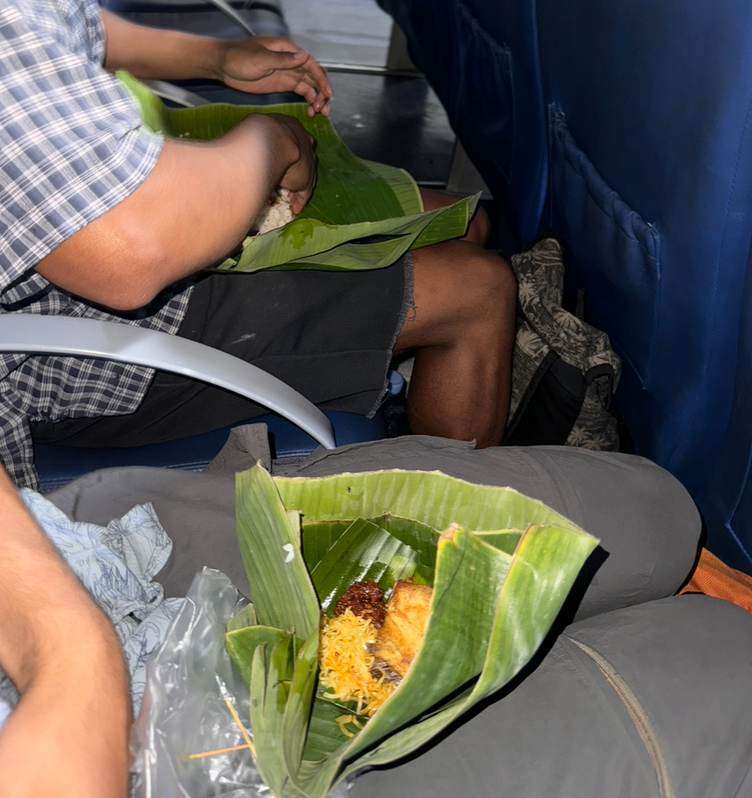 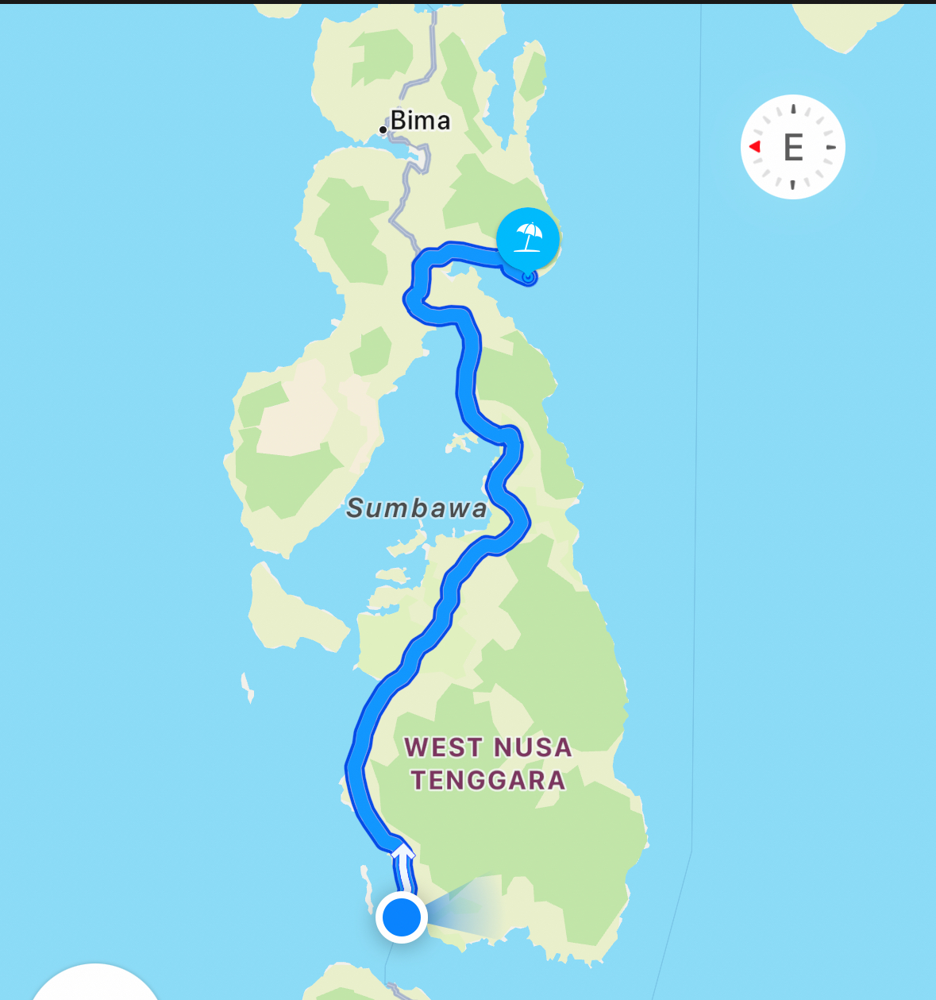 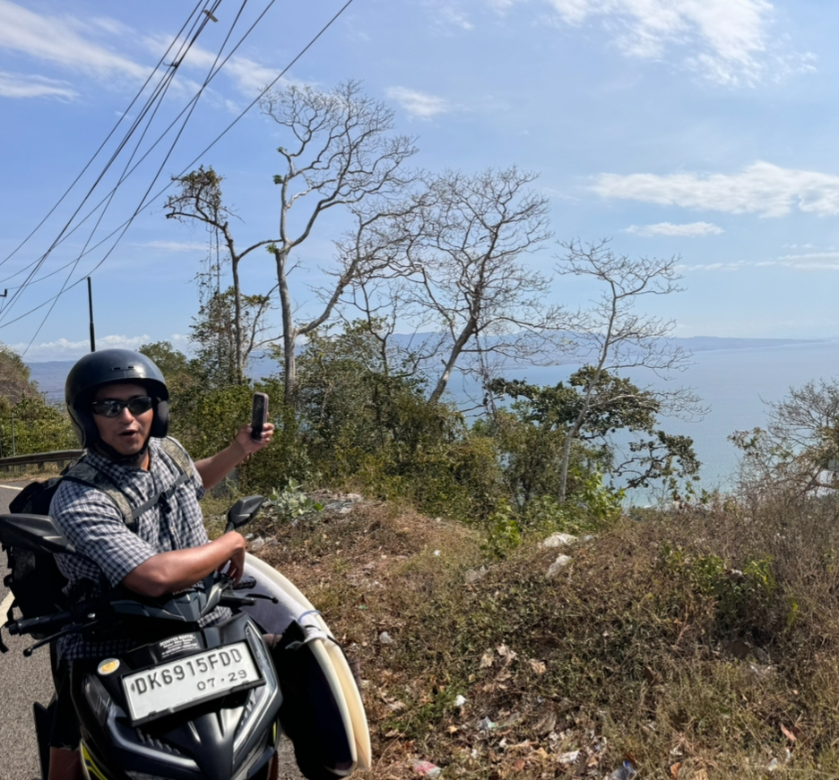 
We arrived in Lakey Peak just before 5 burnt, dirty, and with numb butts. We pulled into Danny Jujol Homestay and we very relieved when he greeted us right at the gate and led us to our room. Fully equipped with A/C AND hot water we are living large. Hungry, and tired after a shower we went looking for food. Down the street we found Lela’s Warung. We were invited into an empty warung by her daughter sitting on their front porch. Her mom, who I assume is Lela, came out and we both order the Fried chicken Noodle (Mie Ayam Goreng) for 30,000 rupiah ($2). After about 15 minutes she popped out with a mother-feeding-two-hungry-boys portion of food. We scarfed it down (DELICIOUS), chased it with a Bintang and headed to bed.
{kind=link}
We woke up this morning ready to get in the water and not on a scooter. We decided to paddle out to Lakey Peak even though there are 2 other waves in the bay and many others a short ride away. We did the 400m paddle out to the waves which is no problem when the water is 80 degrees. The lineup had about 20 guys in it with locals, groms, and visitors alike. It was about 4-6 ft and wave is like a better Lower Trestles that is ridiculously consistent, so the crowd is no problem. Plus, the overall vibe is way better than in Bali. People talk to each other and are for the most part respectful about waves. After surfing for two and a half hours we paddled in. When we got back to the homestay we were greeted by Danny’s wife asking us if we wanted our complementary breakfast. I had chocolate banana pancakes and Nathaniel had an Omelete.
Life is Good.
Day 10 in Lakey Beach
Barrels, binnies, and bug bites. Lakey Beach has been treating us well. Our time at Danny Jujol Homestay has been sick, so sick that we are extending our stay another week.
Our initial plan was to check out the West side of Sumbawa and attempt to surf Supersuck, a fickle left point known for wide, long barrels and a shallow reef, but as the forecast models slowly hone in on the true swell readings, it is looking like it won’t be enough to make the place pump.
Luckily, we have been having plenty of fun at Lakey Pipe. The wave is incredible, but the scene is too. The locals are very friendly, the food is good, and there is not much else to do but surf. Every night we have went to a local spot called Nami and either played some pool or met some new interesting people. The kids are great pool players and they play by some different local rules. The pool balls are a bit smaller and there is no calling pockets or slop shots; you make a ball in, it counts, simple as that. Potting the cue ball warrants a shot from the kitchen but you get two shots, a scratch also gets two shots, but no movement of the cue ball. You don’t need to call the eight ball shot either. It took a few nights to get the hang of these new guidelines, but I’m getting there.
We have done a bit more exploring of the culinary options in Lakey Beach in the last couple days. All of the joints that are on the beach are a bit more expensive than the ones on the main road ($2 vs $5), but for sunset or a quick bite in between surfs they are worth it. We have tried burritos, smoothies, cocktails, and Nasi Goreng at Ali’s and pizza, fish, tacos, burritos, açaí bowls, smoothies, and Mie Goreng at Fatmah’s. Our favorite combo thus far has been a White Monkey Smoothie (homemade almond milk, dates, peanut butter, and cocoa nibs) and Fish Tacos at Fatmah’s. Tonight we are going for the Fatmah’s combo again after we had Lela’s Warung at lunch.
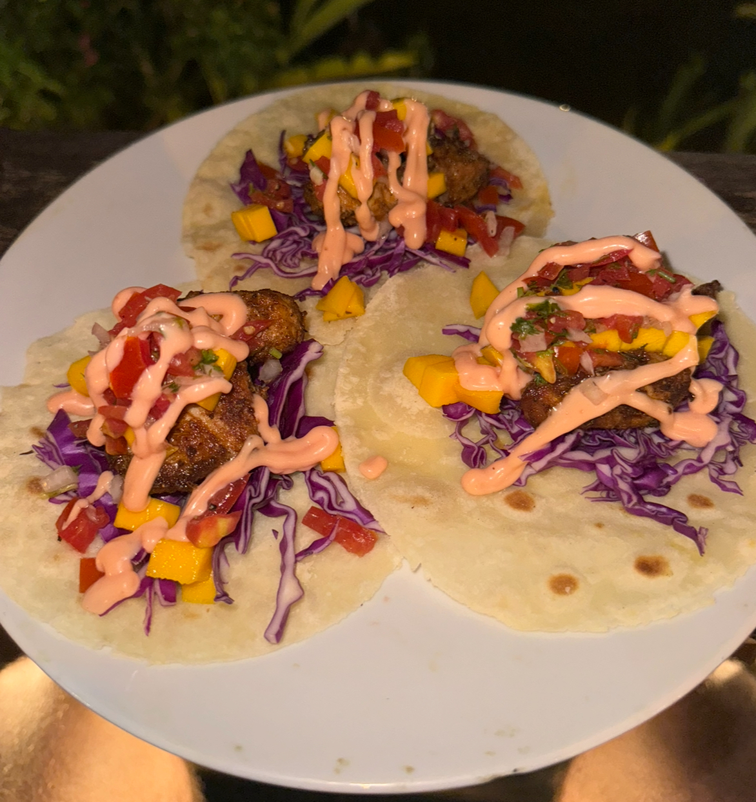 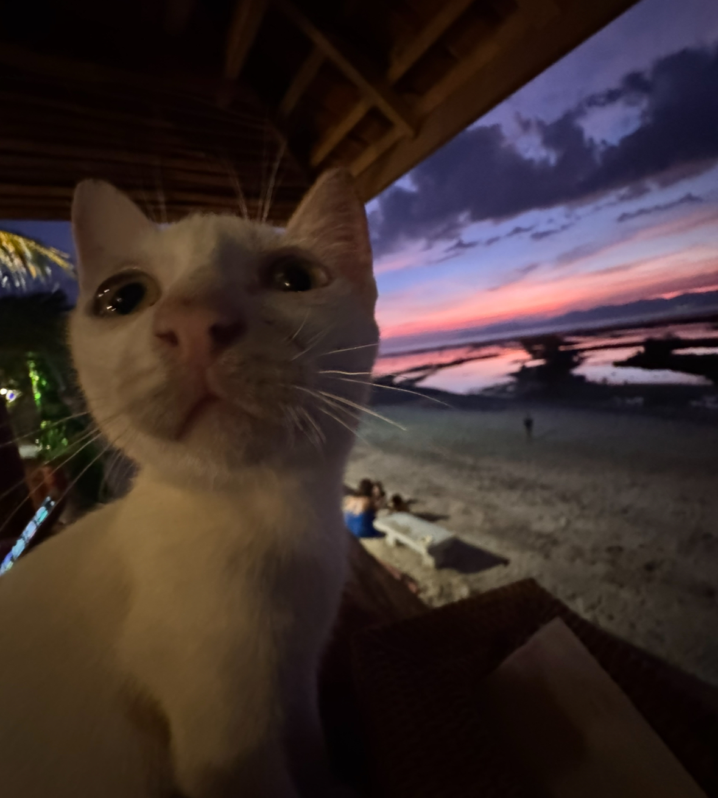 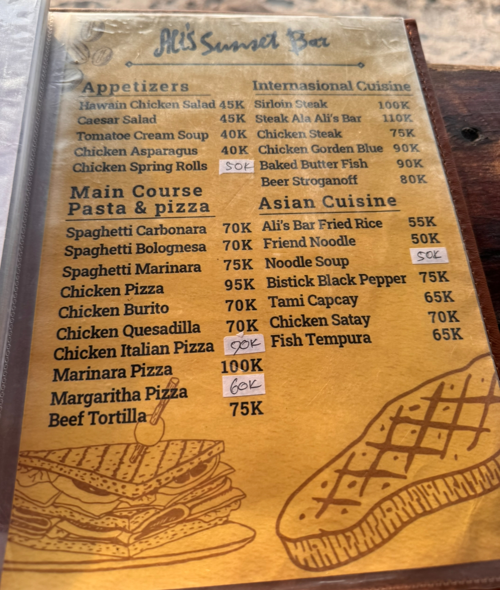 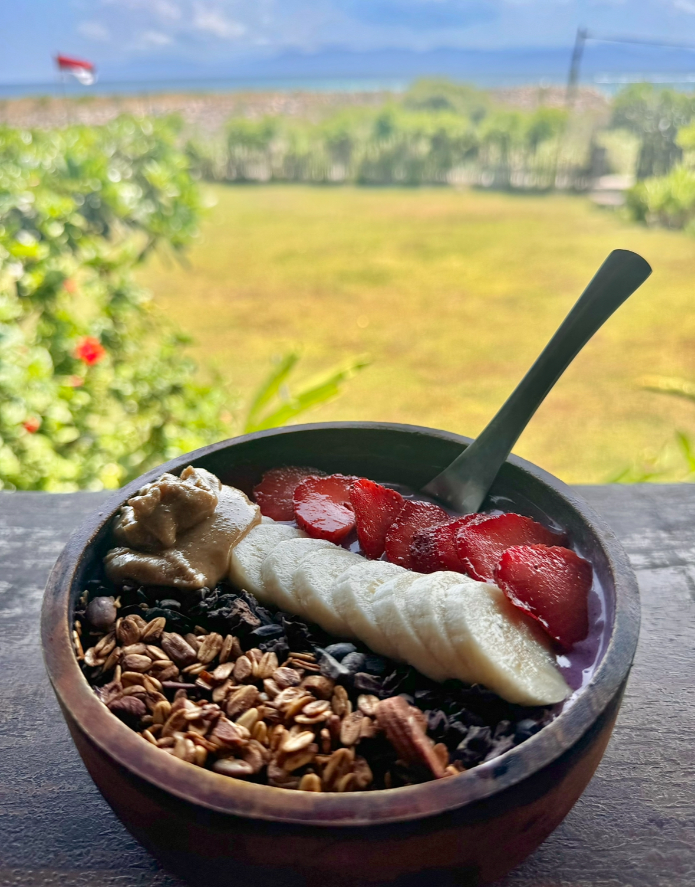
The other night we met one of the best local surfer kids, Raju Barrel, at 15 years old he was very humble and down-to-earth. One of the first questions I asked him was if he had a seen the upcoming swell and he responded by telling us that he hadn’t checked the swell in 3 years and he usually just wakes up and checks the waves. That just goes to show you how consistent the waves are here in Lakey. He is currently sponsored by CI surfboards and we were asking him if he had any plans or wanted to go on a surf trip somewhere, but he said that he didn’t really because the waves are so fun in Lakey all year.
This conversation was by far the most elucidating in terms learning about the local eco and economical systems. When we asked him about the bright lights that sit across the bay, “Teluk Puri”, from Lakey Beach were he told us it was a lobster farm. He told us that its much harder to find lobsters in the wild around Lakey Beach than it was in the past. We were talking about how we see so many sea turtles when we are surfing (the 2-4 turtles we see per session seems like a lot), but went on to tell us about how there used to be so many that they used to eat them very often and he even remembers his grandma making him turtle soup when he was little.
Lakey Pipe has been our go to wave, we have surfed it almost every day and at a range of different tides and sizes. The wave can be a hollow slab on a foot or two of water at a low tide or a long 5+ turn wave at a higher tide. Nathaniel and I have been dialing the wave in and figuring out the best time of day to surf for tides and crowds. The local kids get out of school at 10 or 11AM, but lately the tide hasn’t been high enough to surf it until then so we have been dealing with the wild grom crowd. Realistically, the groms are not at all the problem in the water, it is their wave and they all have decent etiquette. The real issues are the old Aussie or American expats that feel completely entitled to paddle directly to the top of the peak and back out or go over the falls on every good set wave. The other crew that clogs the artery of a normal lineup are the local “lessons” going on.
It seems that some people come to Lakey Peak with almost no surfing experience and hire a “surf guide” (one of the locals) who has priority in the lineup and pays them to let them paddle to the peak and then the local will push them into the waves. This often is happening on days that are far beyond the skill level of the pushee. Most of the time the person getting pushed in will fall and ruin the entire first section of the wave and then the local guide will take the next wave. So if there are two or three sets of guides and learners out in the water a whole set will be used up. But, sometimes if you are deeper than the guide and you pop up on a wave they will push a leaner into the wave directly at you. I almost lost an eye at Lakey Peak when some middle-aged man with water sunglasses was pushed into a wave in front of me and he fell causing his board to shoot out of the whitewater at my head.
Sometimes its a good thing that the people are getting pushed in if its extra busy because you can often count on the scraps of fallen barneys on the inside. The odd thing is that it is not only beginners that pay for the service. There are a number of girls that seem to be paying for the service too. There was even this sponsored 15 year old girl in at Lakey Pipe a couple days ago who was getting pushed in and even yelled at one of the guides when he was too far away to help her get into a wave that she couldn’t get into. Odd times.
Day 15 in Lakey Beach
Little island fever setting in. As our looming journey back to Bali has grown closer I have become more antsy here in Sumbawa. We have our wonderful routine of surfing 3-6 hours a day and eating great inexpensive food for breakfast, lunch, and dinner. Plus the 10 cent Beng-Beng bars (see below) sold in the shop run by my homestay truly test my self restraint after every meal. The waves have been fun, but not truly pumping. I’ve gotten barreled more than I ever have before in my life, but the majority of them have been below head high. We leave on our journey back in 2 days. Today we drove 20 minutes into the next town to withdraw some more cash and since my bank has completely blocked all of my devices from accessing my bank account (even though I let them know I was going to Indonesia) and withdrawing money from ATMs I have to use Nathaniel’s bank account and Apple Cash as a proxy for withdrawing money.
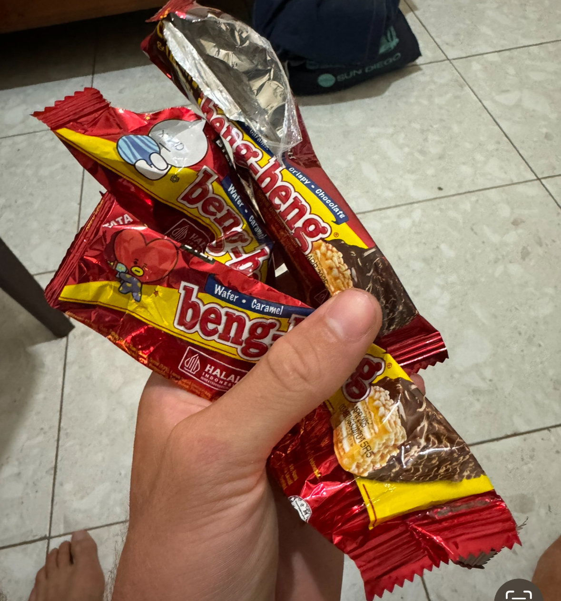 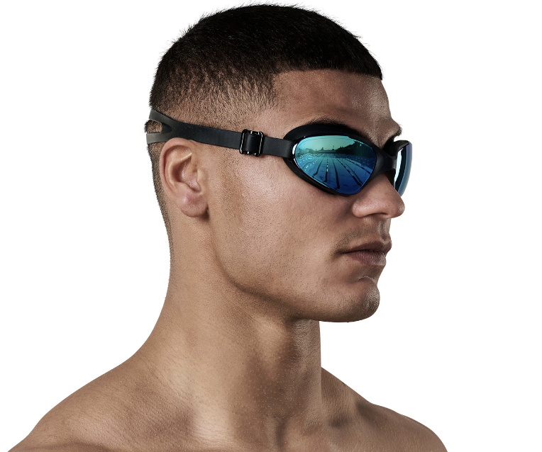
The lowtide slab-thing at Lakey Pipe does this quite often.
Anyways, soaking up every minute of it and enjoying the heat and warm water before I head back to the PNW to get in my neoprene and under my winter comforter. Having a bit of trouble with the YAML in the code, so thats the reason for the long pause. Halfway got it fixed so that I could post, but more troubleshooting to be done later.
See you back in Bali.
Last night in Lakey Beach
Disclaimer: I am writing this in January 2025. Life got busy, I got a job or two or three), and now its 2.5 months later and its getting done.
We didn’t go straight to Bali. The night before we were gonna leave our friend Ethan sent us a shot of Desert Point. It looked pretty sick. A few Bintangs deep and hyped up on a shot of our friend getting slotted in a turquoise blue pit, we hopped on our favorite, Booking.com, and locked in a spot at “Desert Point Bungalows.” After 4.5 hours of sleep we got on our scooters at first light the next morning. We knew what laid ahead of us on this way back, which made it a bit less stressful and almost more enjoyable ride. As drew closer to Poto Kayangan after 7.5 hours of winding Sumbawa countryside it began to drizzle. Then it began it drizzle a bit more, and bit more until it was pissing rain on us as pulled into the last 3 miles to the ferry. All the ticket booths we tried lost service in the rain so we kept soldiering on in the rain; backpacks soaked, double decker buses flying past at 80 km/h, and not much visibility due to a pair of $5 sunglasses being our only windshield. When we finally reached the port we got tickets and boarded the ferry. Just as the rain was subsiding, of course. On the ferry Nathaniel and I bough some pisang leaf Nasi Goreng dan Ayam for 10000 rupiah. The chicken in those made me want to puke, it smelled rotten, but I ate the rice anyways. Foolishly, maybe, I also got a coconut drink from some guy. More on that later.
{kind=link}
On the ferry, we dried ourselves out as it chugged across the Sumbawa-Lombok Straight for the next 1.5 hours. We pulled into port in Pringgabaya and headed up to the East Lombok Dive Hotel for the night. The next morning I had a job interview at 3PM PST which meant that it was at 6AM Indonesian time (UTG?). Good news, I got the job. We left at a leisurely 7:30 after my interview finished, and set out across Lombok for Desert Point. As you go past the Port of Lembar, the jungle fades into a chapparal/ tropical desert landscape. The final mile of road to Desert Point is not friendly for you average Bali Scooter. It rutted, cobbled, and begs you to take a wrong line to get high-sided or bash the bottom of your scooter to bits.

Stop 3: Desert Point
Day 1
We were the only people staying at the Desert Point Bungalows. After walking up the point we soon realized that there were many other accommodations that we were unaware of online. This walk also made it clear to us that we did not bring enough money to even get a beer every day. The remoteness made everything about 50% more expensive and we had not re-upped on cash before heading out there. Our bungalow was a bit worse for wear. You get what you get and don’t throw a fit. It might take another 500 words to describe our bungalow, so I’ll include a video walk-through somewhere in here.
To top off our regretful accommodation choice in the first hours we were there, the surf was blown and we didn’t have the budget to buy a few Bintangs after our 5 hour scooter ride in the scorching Lombok sun. Luckily, as the tide dropped the waves got better and better, by 2 hours before sunset perfect 4-5 foot barrels were rifling down the reef. We paddled out with the 30 other guys there and got a few barrels each, the beat bungalow and lack fo funds seemed minor after that session. The next day we surfed the morning and afternoon, it was getting bigger and better, but also more crowded and hostile. By the afternoon session there were nearly 80 guys out in the lineup, a variety of skill levels, but all equally hungry and aggressive for one of the perfect rides coming down the reef. I am neither an excellent surfer, nor an aggressive one. Desert Point is like a beautiful white sand beach covered in trash, the most beautiful girl you’ve ever been with but she’ll cheat on you every time, a giant Chanterelle mushroom riddled with bugs; absolute perfection with a fatal flaw. That’s not to say that nobody likes the wave. Many people go there religiously and have a great time. Much more aggressive surfers than I.
Doesn’t get much prettier than that.
Days 2-4
Either way, during the second night I came down with a fever and a stomach bug (Likely culprit is either ferry nasi goreng or odd fruit drink). I spent the night between our sweaty “toilet” and a lawn chair on the beach. The man running the bungalows turns off the power at 10PM. If you are not asleep by then, well, good luck. The next day I did not feel well, I had nothing to eat and slept in the shade all day. The waves got good at the end of the day as usual, and Nathaniel got some great rides. I slept on the beach the last night and my fever broke at some point. It was pumping in the morning, the biggest day of the swell, it was also the most crowded. The waves were not lining up that well though, it was breaking right on the reef and not holding open much. An Australian guy staying at the bungalows came in with his back torn apart from trying to surf the end section of the point, “The Grower”. The wave seems to double in size as it hits this section, but you can be rewarded by huge schoolbus kegs if you make the drop and get some speed. Nathaniel paddled out for a bit, but the quality of the waves and density of the crowd sent him back to the beach pretty quick. We packed up and headed to Lembar. 3 nights was too long at Desert Point, I would call it a 2 night spot. Maybe 20 years ago I would have stayed there for a week, but the crowds are way too heavy these days.
Here is a link to the Desert Point Bungalow Walkthrough: https://drive.google.com/file/d/1BWXnTHMEPxb9P74x7fnSSIFDhlHEHCco/view?usp=drive_link
Stop 4: Bali
Day 26-30 of the trip
After a long ferry ride with some seasick locals and a sketchy night ride from Padangbai to Bali, we arrived at Pondok Sentana Guesthouse, our haven, our shelter from the storm. With A/C,toilet paper, solid mattresses, hot water, and even a pool we were there. We decided to go a bit bougie for our last 4 nights. In Bali we loafed around, surfing Uluwatu, eating smoothie bowls, sushi, and pizza, and enjoying our last sunsets and Bintangs.
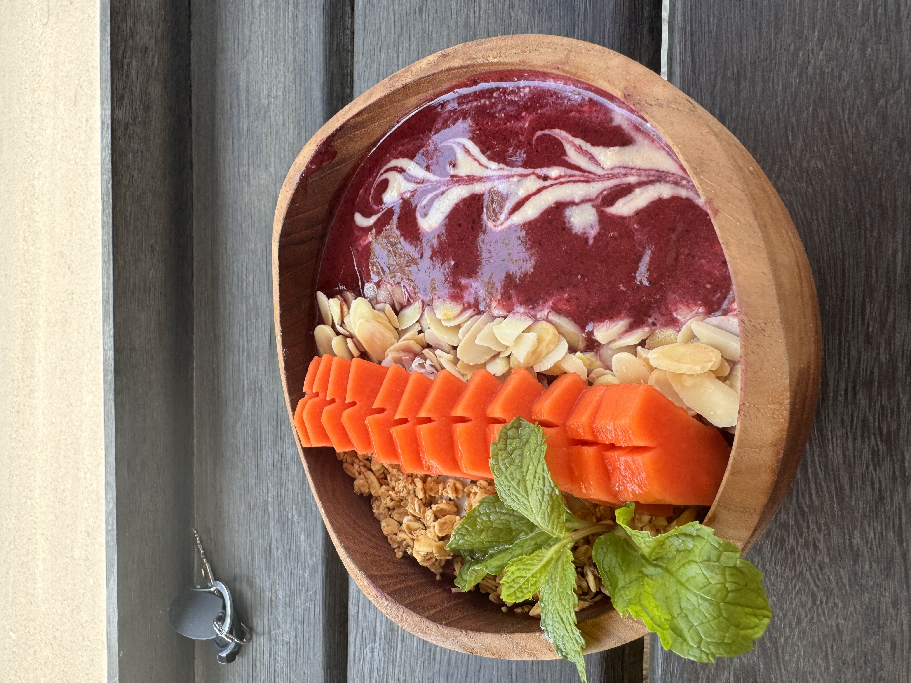 
We had surfed and dinner with Ethan and Sonya, who we had just missed as they had left Desert Point as we arrived. We went out to a club (finally) in Bali. We had done almost no partying, besides drinking with locals and Australians in Lakey Beach, the entire trip, which is impressive for Nathaniel and I. We met up with some friends from Santa Barbara and checked out the Single Fin Bar, which turns into a giant frat party on Sundays?. Max, Fran, Katie, and Ava were just beginning their vacation time, I was a bit jealous of all the missed ferries, mishaps, and miscommunication they had ahead of them. Nathaniel and I don’t travel very comfortably though, so a month suits our style well. We scored excellent waves, saw plenty of Bali, Lombok, and Sumbawa, logged well over 1000 km on our mopeds, and met some interesting folks along the way. After its all added up, including the plane ticket, I spent between $2500-$3000 for the month in Indonesia.
Day 30(1)
One tidbit before I publish this. Most people would probably not be as ignorant as Nathaniel and I were, but I’ll give you a quick warning. Semptember 9th - October 9th is not 30 days, even if you arrive on 9/9@10PM and leave on 10/9@9AM, it is 31 days. A Basic Indonesian Travel Visa is 30 days, and every day past 30 cost 1 million rupiah, about $75. So as we scanned our passports to leave we were taken to a backroom and, because we had perfectly used our last rupiah on the taxi, had to go withdraw 1000000 Rupiah from the ATM. Poor us. Lesson learned. If you read all this, thanks for reading, I hope you are inspired to go get out there and see it all. Maybe don’t moped as much though, or do.
Citation
@online{freebairn-smith2024,
author = {Freebairn-Smith, Dylan},
title = {Nusa {Tenggara} {Islands} {Surfing} 2024},
date = {2024-10-09},
url = {https://dtfrees.github.io/posts/2024-09-06-Indo-Trip/},
langid = {en}
}